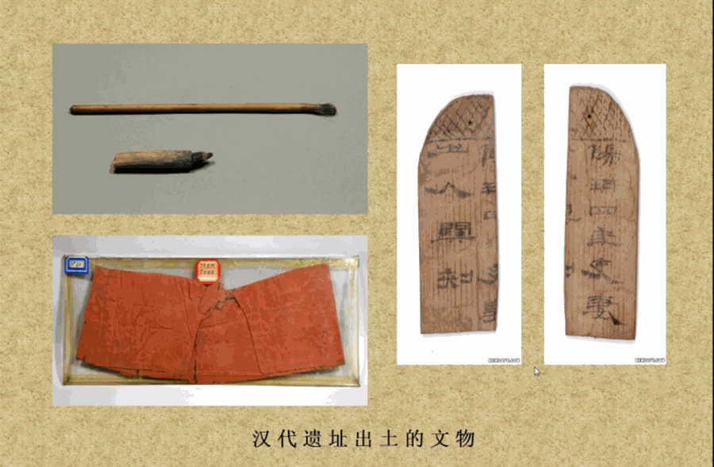
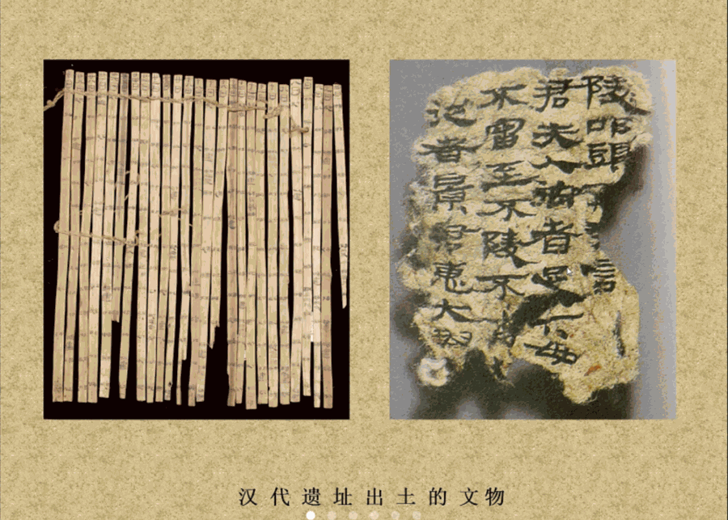
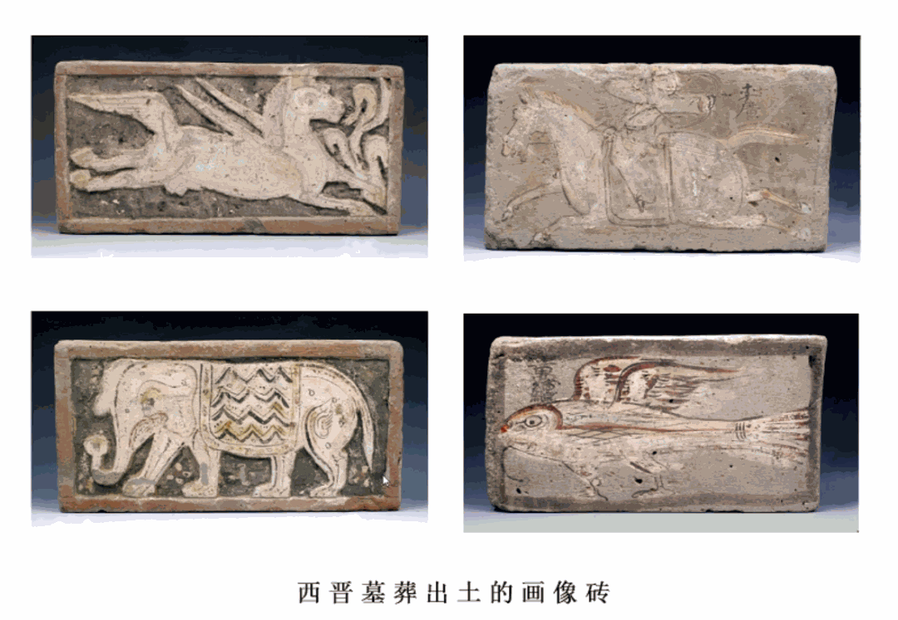
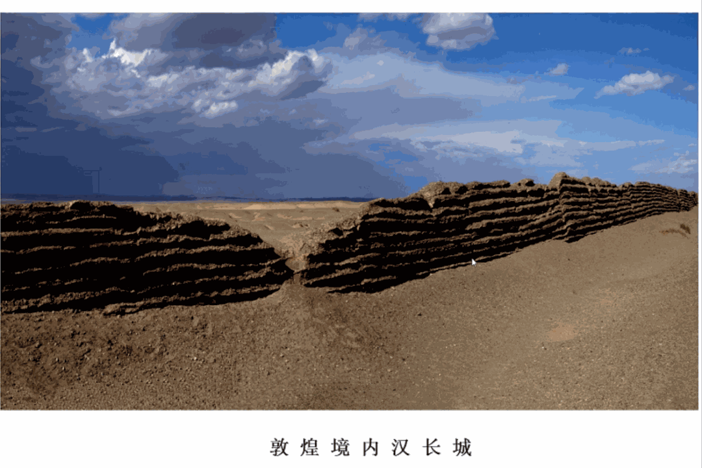
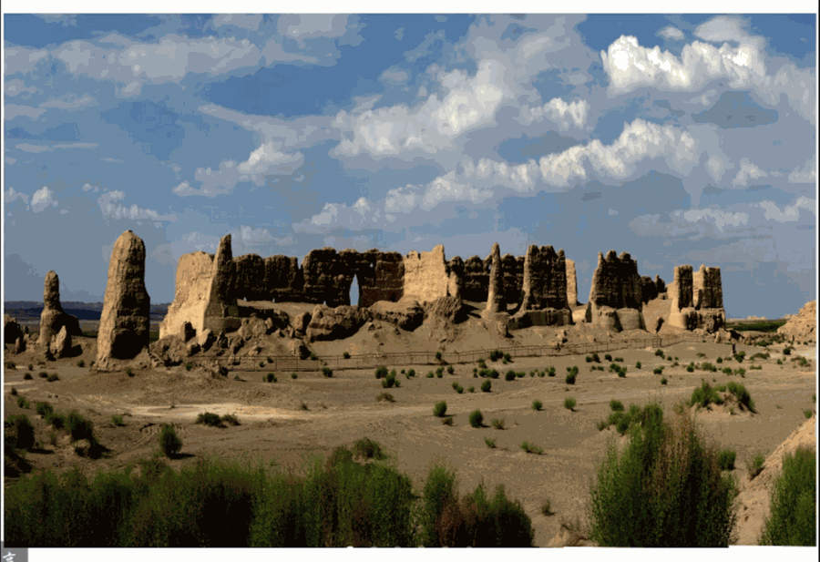
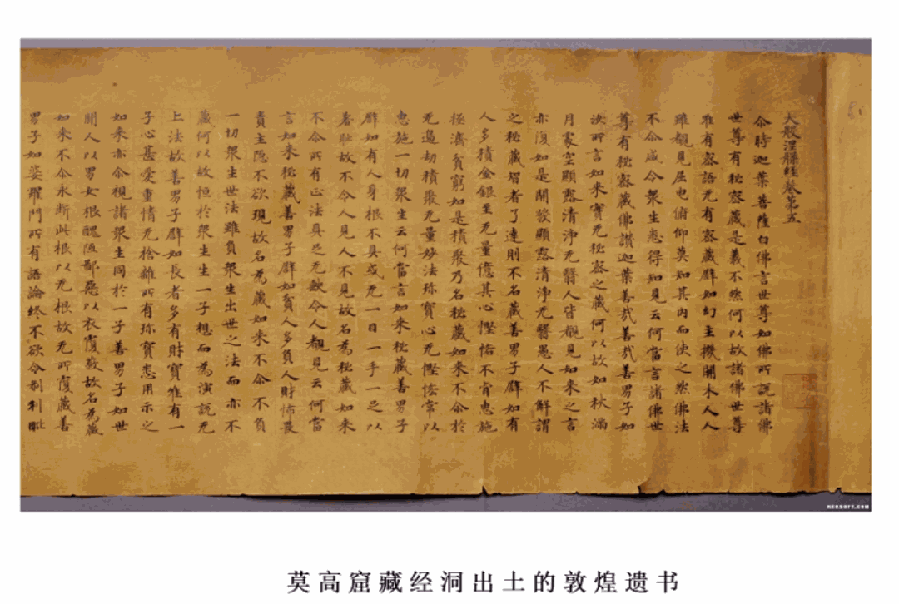
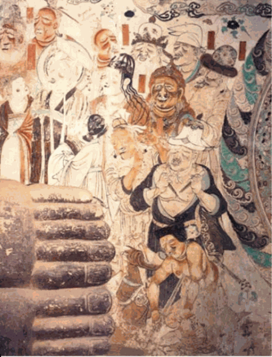

【行者无疆•聆谂丝韵】平凡是你，伟大亦你
平凡是你，伟大亦你
曾几何时，
喉襟沙场，要塞边关，
繁荣富庶，婆罗玉兰。
放眼千年，
西域绿洲，丝路明珠，
世界文明由此凝结，
千万魂魄于厮涤荡。
广袤大漠中，有你们在坚守。
文化苦旅中，有你们在传承。

千百年历史变迁，敦煌早已不再只是一个地理名词而已，藏在背后的，是一处文化交汇的高地、一处精神信仰的坐标。她坚强、内敛、静谧、博大，吸引着无数人向她靠近，为她朝圣。她是一部生动形象的中国佛教编年史，一部深藏在大漠中的中国美术《诗经》，一部记载千年社会历史图景的百科全书。
如今，行者们携手踏入跨越岁月的长河，共览千年艺术的长廊。


上午，行者们很荣幸地邀请到敦煌博物馆的荣主任向大家展开关于敦煌文化的讲解。在荣主任的叙述中，一幅广袤的“沙漠孤烟直，长河落日圆”的苍茫大漠画卷在我们面前徐徐展开。
由古至今，由表及里，由形入魂，荣主任用丰厚的知识积淀，为行者们揭开了敦煌——这一坐落于我国西北边疆的熠熠生辉的宝藏——的神秘面纱。通过对敦煌当地的景点介绍以及对文物方面的知识科普，我们被荣主任带入到了那个宏伟的年代；同时，我们对于丝路文化以及敦煌文化有了更深入的理解。

下午，行者无疆团队对荣主任进行了采访。通过对于敦煌旅游现况、文创产品、民俗创新、博物馆推动作用等多方面相关内容的问答，行者们对敦煌的各方面有了进一步了解。
采访的过程，让行者们得以将网络上程式化的文字转化为自己的真听真看真感受。在采访过程中，行者们震撼于敦煌的悠久历史。“敦煌艺术既是中华传统艺术的典范,又是全球交往和全球化的产物。”在全球化进程加快的冲击下,敦煌艺术创新应用研究的重要性不言而喻。有效的保护、传承与发扬不仅可以为缓解敦煌文化老化趋势、复兴敦煌文化做出贡献，更能够为中华文化在新时期实现伟大复兴这一必然要求提供了实质性的保障。



荣主任是敦煌文化的守护人之一，亦是一代代的文化传承人的代表之一。纵然时代日新月异，文化传承人皆初心不改。正是因为有他们，我们的文化才得以于岁月的沧海桑田之下幸存；正是因为有他们，我们中华文化才有了欣欣向荣的新现象。守护文化、传承文化，亦是我们当代青年不容推卸的责任！
平凡是你，伟大亦你。敦煌文化并不是高高在上的虚无之物，而是贯穿于于日常生活、浸润于淳朴民风的精神支柱。但这只是它的广袤表现，其深层次的内容更值得我们寻味。广袤的地域特征下，隐藏的是一代又一代人对敦煌文化的传承与发扬，这也正是行者们一路求索的中华精髓。
平凡是你，伟大亦你。这一代代坚守在我国西北地区、为敦煌文化与丝路文化而奋斗在一线的文化工作者们，以崇高的使命精神，为世界艺术宝库增添瑰宝，让世人得以看见历史的华光。


平凡是你，伟大亦你。
是你们，
让现代社会能够一睹历史的沉淀，
是你们，
让今日中华得以饱览昔日的辉煌。
向你们致敬，
向坚守在文化一线的工作者致敬，
向致力于伟大事业的一个个普通人致敬。
文末：感谢敦煌博物馆对我们实践的支持。

来源 | 行者无疆实践团
文字 | 温兆琪
排版 | 吕丰元
审核 | 康艳虎 张清雅 胡至鸿 苏亚男
行者无疆实践团
QQ：2758025831

随行者一起认识世界
长按二维码